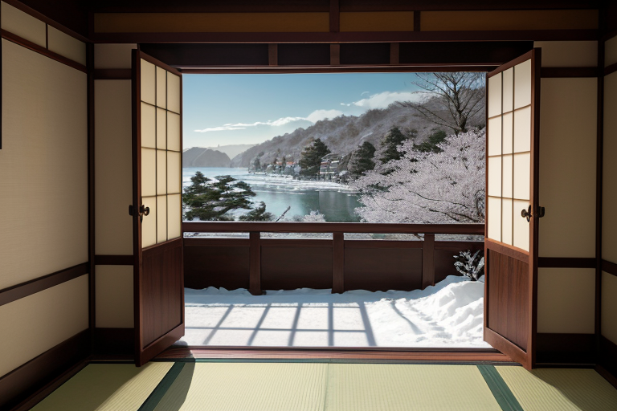
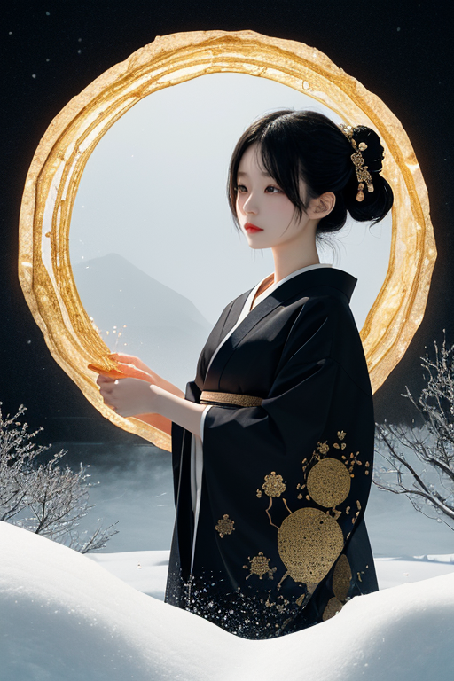
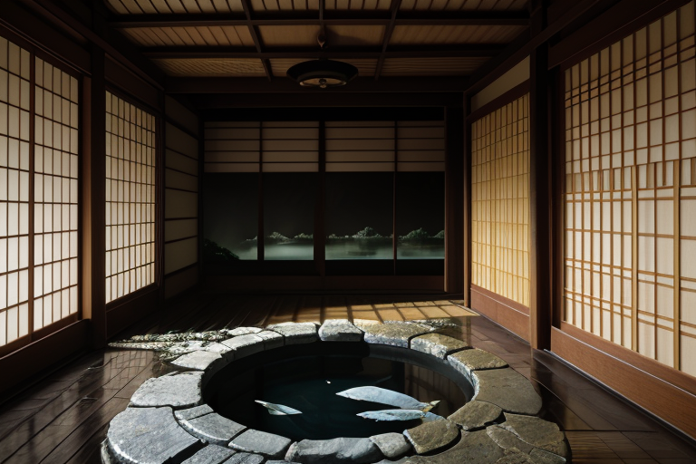
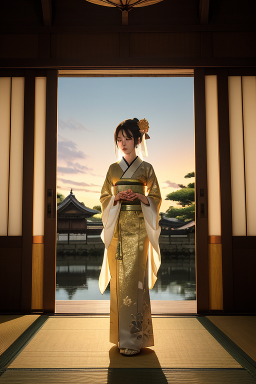
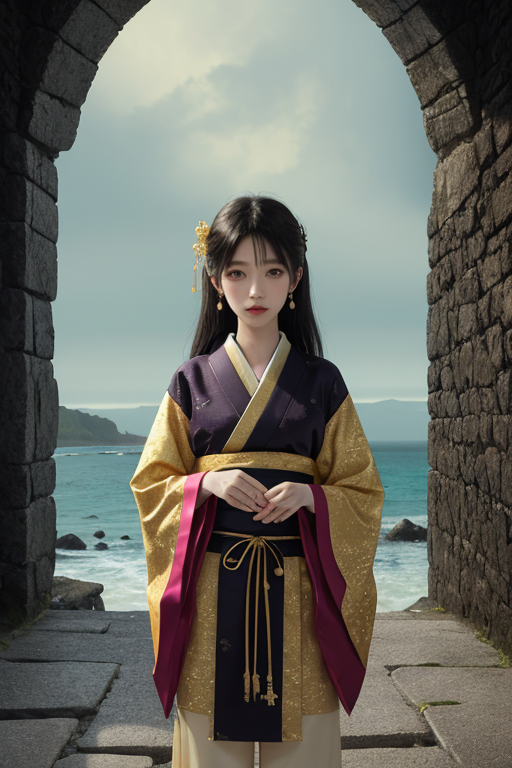

第一章 現実の石川
あなたはまだ気づいていない。この土地にも、王がいることを。
兼六園の雪吊りは、静寂の中に張り詰めた緊張を宿している。冬の重みに耐えるための、職人の計算された美。金沢城の石垣は、積み上げられた年月の重さを、微かな歪みとして抱え込んでいる。この土地は、美の記憶を層のように重ねてきた。加賀百万石の文化、輪島塗の漆黒、金箔の輝き。全ては、ある完璧な形を目指して研ぎ澄まされてきた。
しかし、その完璧さの下には、別の現実が横たわる。土地は絶えず蠢いている。日本海の荒波が能登の岬を削り、地下ではプレートが沈み込み、歪みを蓄え続ける。美は、この不安定な基盤の上に、か細く築かれている。
ひがし茶屋街の格子戸の奥、金箔貼りの室内で、彼は微かに目を開けた。イシカリア・アルテ、美の王。その瞳は、職人が作品を見つめる時のように、静かで鋭い。彼の王国「イシカリア・アルテ」は、今、深い眠りの中にある。金箔のように薄く、強靭な封印「金箔封」によって、その力のほとんどは封じられ、美の記憶を保全するだけの微調整に留められている。
彼は問う。この揺らぐ大地の上で、美とは何か。守るべき過去の結晶か。それとも、創り出すべき未来の形か。答えは、まだ封印の中に閉ざされたままだ。

第二章 歪みの兆候
兼六園の雪吊りは、静寂に縁取られていた。イシカリア・アルテは、その一本一本の縄の張り具合を見つめていた。完璧な均衡。それは彼の王国が保ってきた、美の静謐そのものだった。
ふと、彼の長い指先が微かに震えた。足元から、ごく僅かな「歪み」が伝わってくる。金沢城の石垣の継ぎ目から、輪島の漆塗りが乾く工房の空気から、かすかな軋みが響く。金箔封の結界に、目に見えぬひびが入り始めている。
主席妖精アルティナが、そっと近づいた。「王、輪島からの報告です。海の色が、いつもと違うと。潮の香りに、ほんの少し、鉄の気配が混じっていると」
守るべき美の秩序が、創り出すべき変化の予兆に、揺らいでいる。アルテは目を閉じた。彼の内側でも、何かが蠢き始めていた。感情という名の、予期せぬひび割れが。

第三章 王の葛藤
兼六園の霞ヶ池の水面は、鏡のように静かだった。しかし、アルテの目には、その静寂の底で蠢く「歪み」の影が見えていた。輪島の海が告げる異変は、この王国の基盤を揺るがす前兆だ。金箔封の結界は、完璧な美の秩序を守るために張られた。だが、その完璧さこそが、今、内側から生じる新たな「何か」──感情の萌芽と、それに呼応する地の軋み──を押し潰そうとしている。
「守るべき美の秩序か、創られつつある新たな美の可能性か」
アルテは金沢城の石垣に手を触れた。加賀百万石が築いた不変の美。輪島塗が層を重ねる不変の技。それらを守ることは、彼の使命だった。しかし、掌から伝わる石の冷たさの中に、微かな振動を感じた。地底で蓄えられる力は、封じるだけではいつか暴走する。治部煮の椀に映る自分の顔は、いつになく曇っていた。
彼は自問した。この葛藤そのものが、既に「守られた美」の領域を超えているのではないか。完璧な静寂の中に、一片の金箔がひび割れる音が聞こえた。

第四章 妖精との対話
金沢城の石垣に、夕陽が金箔を貼るように染めていた。イシカリアは、白鷺が舞う堀端でアルティナと並んで立っていた。主席妖精は、掌に薄く延ばした輪島塗の下地を見せながら語り始めた。
「この地の美は、常に『封じる』ことから始まりました。加賀百万石は、戦の技術を漆芸や金工に封じ、平和な文化を創った。輪島塗の沈金は、刃で刻む傷を光に変える封印術。金箔は、儚いものを永遠の輝きで封じる。」
彼女の声は、静かだが確かな力に満ちていた。
「しかし王よ、あなたが感じた地の軋みは、新たな問いを投げかけています。過度な封印は、内側から圧力を生む。美を守ることは、時にその息の根を止めることになりはしないか。」
イシカリアは、ひがし茶屋街の格子戸から漏れる三味線の音を聞いた。守られた形式美の中にも、奏者の一瞬の情感が滲み、毎夜わずかに異なる旋律を生んでいる。
「アルティナ、私は『調整者』だ。歪みを消すのではなく、そのエネルギーを…」
「別の形へと導くことですか。」アルティナが続けた。「ならば、それはもはや『守る』作業ではなく、『創る』行為に近い。次の揺れは、破壊ではなく、何かを生み出す胎動かもしれない。」
彼女の瞳に、21世紀美術館のプールの水面のような冷たい光が揺れた。完璧な保存は、死を意味する。美は、呼吸していなければならない。

第五章「微調整と余韻」
金沢城の石垣に、微かな金の光が一瞬、脈打った。イシカリア・アルテは、自らの王国の歪みを、封印の亀裂そのものへと導いた。破壊の衝動を、創造の振動へと変換する、危険な微調整。輪島の海から押し寄せる歪みの波は、金箔の封印を完全に修復するには至らなかったが、そのエネルギーは、輪島塗の漆に新しい光沢を、加賀友禅の染料に深みを、職人の指先にほんの少しの確信を、そっと添えた。
代償は、彼自身の「静謐」だった。完璧な調整者であることを諦め、感情という不純物を抱え込んだ。アルティナが傍らに立ち、何も言わない。彼女の沈黙が、すべてを理解している証だった。
美は守るものか、創るものか。答えは出ていない。ただ、封じられた力は、完全には眠らなかった。それは今、この土地の職人の息づかいの中、海の潮騒の中、次の時代を待つ微かな振動として、確かに生き続けている。
あなたの町にも、王がいる。